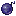

声波炸弹
Sonar Bomb
英文名: Sonar Bomb命名空间 ID:
eternal_starlight:sonar_bomb类型: 物品所属模组: Eternal Starlight资料检索: 🔎 在 MC百科 搜索「声波炸弹」获取方式
钓鱼 (1)
eternal_starlight:gameplay/fishing/treasure
合成获得 (1)

原始 JSON
{
"type": "minecraft:crafting_shaped",
"category": "equipment",
"key": {
"G": {
"item": "eternal_starlight:shivering_gel"
},
"N": {
"tag": "c:nuggets/deepsilver"
}
},
"pattern": [
" N ",
"NGN",
" N "
],
"result": {
"count": 12,
"id": "eternal_starlight:sonar_bomb"
}
}